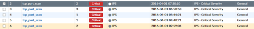

{kind=link}
Cuando se reciben miles de ataques desde Internet, es necesario disponer
de información que permita tomar decisiones de una forma ágil y rápida.
En un CERT/SOC, es decir en un centro de operaciones de ciberseguridad,
es primordial disponer de información sobre una posible amenaza para
ejecutar acciones y/o medidas de prevención, protección y defensa.
Introducción
Por ejemplo, se detecta un tcp_scan en el IPS / Cortafuegos:
|  |
| FortiAnalyzer - Event Manager - IPS |
{kind=link}
A priori no se sabe si es lícito o no, para resolver el misterio se
puede consultar la información sobre la lista de direcciones IP origen,
en alguna de las múltiples fuentes de información / blacklist (véase las
principales fuentes de información sobre reputación y actividad de
las IP en Internet):
**The Top Cyber Threat
Intelligence Feeds**
<span
style=“font-size: x-small;“>AlienVault.com:
Multiple sources including large honeynets that profile
adversaries.
<span
style=“font-size: x-small;“>CrowdStrike.com:
Advanced threat intel as part of their threat protection
platform.
<span
style=“font-size: x-small;“>Cyveilance.com:
Unique feeds on threat actors: indications of criminal
intent.
<span
style=“font-size: x-small;“>EmergingThreats.net:
A variety of feeds.
<span
style=“font-size: x-small;“>FireEye.com: DTI-
Dynamic Threat Intelligence service.
<span
style=“font-size: x-small;“>HackSurfer.com
(SurfWatch): Insights tailored to your business.
<span
style=“font-size: x-small;“>HexisCyber.com:
Feed supports automated actions.
<span
style=“font-size: x-small;“>InternetIdentity.com:
Threat feeds from their big data solution ActiveTrust.
<span
style=“font-size: x-small;“>iSightPartners.com:
ThreatScape series.
<span
style=“font-size: x-small;“>LookingGlass.com:
Maps of infrastructure, connectivity and ownership, plus threat
intel.
<span
style=“font-size: x-small;“>MalwareCheck.org:
Intelligence on any URL
<span
style=“font-size: x-small;“>MalwareDomains.com:
A list of domains known to be associated with malware.
<span
style=“font-size: x-small;“>RedSkyAlliance.com:
A vetted team of corporate computer incident responders and security
professionals.
<span
style=“font-size: x-small;“>RecordedFuture.com:
Organizes information from the Internet.
<span
style=“font-size: x-small;“>SecureWorks.com:
Provides feeds and also instruments networks.
<span
style=“font-size: x-small;“>Symantec.com:
DeepInsight feeds on a variety of topics including
reputation.
<span
style=“font-size: x-small;“>Team-Cymru.com:
Threat intelligence plus bogon lists.
<span
style=“font-size: x-small;“>TheCyberThreat:
Our Twitter feed. High level but comprehensive and curated.
<span
style=“font-size: x-small;“>ThreatConnect.com:
by Cyber Squared. Focused on information sharing.
<span
style=“font-size: x-small;“>ThreatGrid.com:
Unified malware analysis. Now part of Cisco.
<span
style=“font-size: x-small;“>ThreatIntelligenceReview.com:
Updated reviews of threat intelligence sources.
<span
style=“font-size: x-small;“>ThreatStop.com:
Block Botnets by IP reputation.
<span
style=“font-size: x-small;“>ThreatStream.com:
Famous team. Multiple sources in interoperable platform.
<span
style=“font-size: x-small;“>ThreatTrack.com:
Stream of malicious URLs,IPs and malware/phishing related
data.
<span
style=“font-size: x-small;“>Verisigninc.com:
iDefense feeds highly regarded by some key institutions.
Comprobar todas y cada una de ellas, puede ser un proceso lento y muy
tedioso. Recientemente ha nacido un proyecto que unifica en solo portal
toda la información sobre reputación, actividad maliciosa y
comportamiento de las direcciones IP reportados por las múltiples
fuentes de información con objeto de generar una base de datos de
conocimiento única donde con una sola consulta se pueda conocer si una
dirección IP esta considerada “una amenaza” real o sin embargo esta
considerada como una amenza potencial.
Estoy hablando del proyecto http://cymon.io
{kind=link}
Una consulta en la web, permite analizar la información de la dirección
IP en múltiples fuentes de información, lo que permite ahorrar tiempo en
dicho análisis. Este proyecto además cuenta con una API de desarrollo
que permite automatizar el proceso.
Como ya se anunciaba en nuestro [anterior
artículo](http://www.seguridadparatodos.es/2016/03/svtcloud-monitoring-security-operations.html),
el departamento MSOC ([Monitoring &
CyberSOC](http://www.seguridadparatodos.es/2016/03/svtcloud-monitoring-security-operations.html))
de www.svtcloud.com ha desarrollado una herramienta
[sIPi] que aprovecha esta API
de consulta, para automatizar el proceso de obtención de información
relacionada con una lista de direcciones IP. Se puede consultar 1000
direcciones IP/día, de forma totalmente gratuita.
**[!] Simple IP Information Tools
[SIPI]**
sIPi (Simple IP Information Tools), así os como se ha bautizado a esta
pequeña herramienta que en su versión 0.1, permite:
Analizar la reputación de la dirección IP [actividad malware,
botnet, spam, dnsrbl, blacklist, etc] consultando las fuente
Cymon.io
Nivel de exposición de las direcciones IP utilizando el motor
SHODAN.io
Información de geolocalización básica de la IP utilizando IPInfo.io
Con esta utilidad se ha unificado en una sola herramienta la consulta de
“IP Reputation data & IP Service exposure risk”.
En esta primera versión 0.1, se puede analizar una sola IP o una lista
de IP’s, donde se puede consultar por una categoría [botnet, spam,
malware, phishing, blacklist] o todas, así como añadir información
sobre SHODAN.io o simplemente información sencilla de geolocalización.
Más información y ejemplos se pueden encontrar aquí:
**
// GET it NOW //**
https://github.com/ST2Labs/SIPI
{kind=link}
#ST2Labs
#SVTCloudSecurity
<span
style=“background-color: white; color: #333333; font-family: ‘Helvetica Neue’, Helvetica, ‘Segoe UI’, Arial, freesans, sans-serif, ‘Apple Color Emoji’, ‘Segoe UI Emoji’, ‘Segoe UI Symbol’; font-size: 16px; line-height: 25.6px;“>This
tool is aimed for Incident Response Team and anyone what’s want to know
the behaviour of the “suspicious” IP Address. The tools do search
looking for reputation info from a set of open threat intelligence
sources. Information about this IP like malware activity, malicious
activity, blacklist, spam and botnet activity.
IP Reputation Data & IP Risk Level Exposure